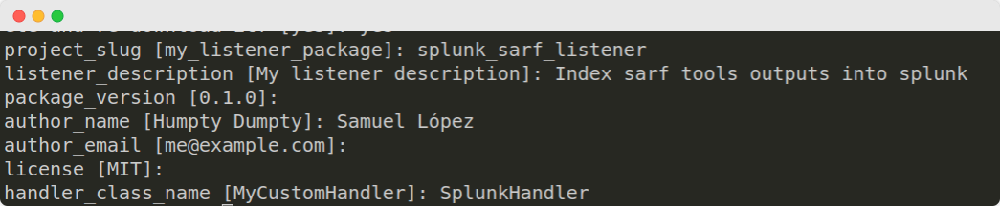
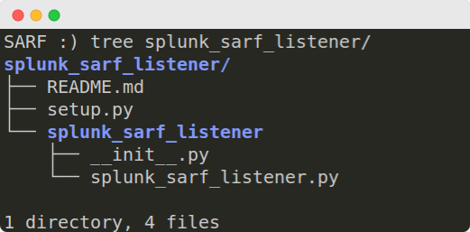
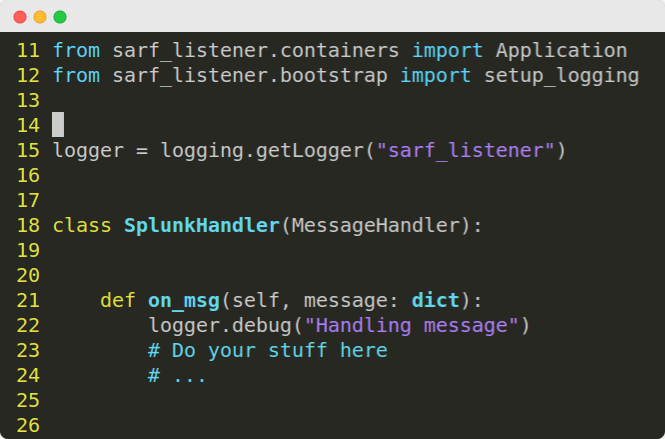

Listeners development¶
Listeners are services that execute tasks based on the messages they collect from SARF. Thanks to them SARF can be extended infinitely.
To develop your custom listener follow the next steps:
Install development kit dependencies¶
pip install sarf_listener cookiecutter
Scaffold your listener structure¶
cookiecutter https://github.com/elchicodepython/SARF-Security-Assesment-and-Reporting-Framework --directory dev_kit/listeners
Fill the cookiecutter with your listener specific information. This example is for a Splunk listener.

After filling all the required fields cookiecutter will generate a listener package structure.

Add your custom code in on_msg method.
This method will be called each time a message is received.
